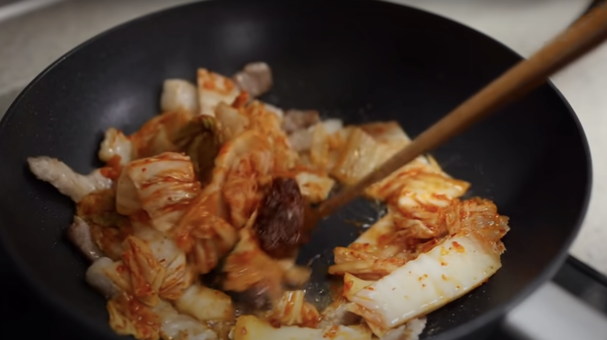
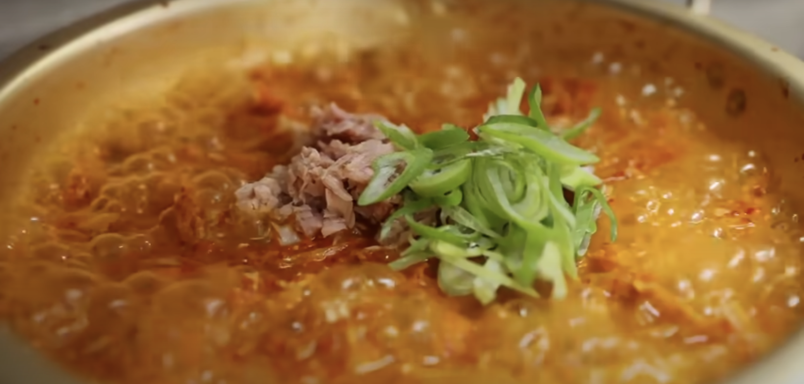

How to get free robux and get rich?
1. Download and get into big problem if you want to!
✅👉
2. Click Here: Free Robux Generator Tools: This is not a real generator!
👈✅
✅👉
3. Click Here for nothing!
👈✅
ㅤ
ㅤ
ㅤ
Scroll below
↓↓↓↓↓↓↓↓↓↓↓↓
ㅤ
ㅤ
ㅤ
ㅤ
as you can see, it's impossible! so instead..
How to cook kimchi stew
ingredients:
- 300g kimchi
- 700ml water
- 1/2 spring onion
- 1 chili
- pork 250g
- 1/2 container of soft tofu
- vegetables
- extra soft tofu

- Stir vegetables and Kimchi for 4 minutes in medium heated pot. Add 700 ml of water after.

- When the water boils, add pork and chili for about 8 minutes.
- Finally, add soft tofu, extra soft tofu and boil it for 3 minutes more.
and there you have, tasty kimchi stew. Enjoy!
Privacy Policy